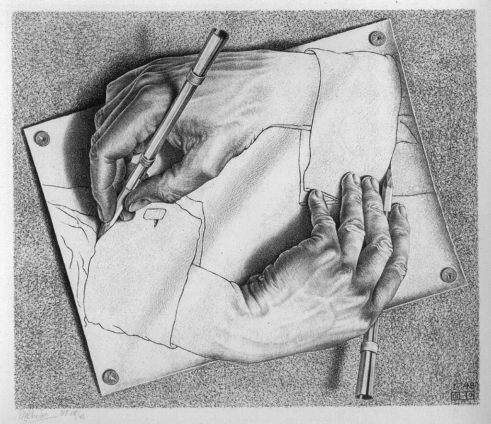
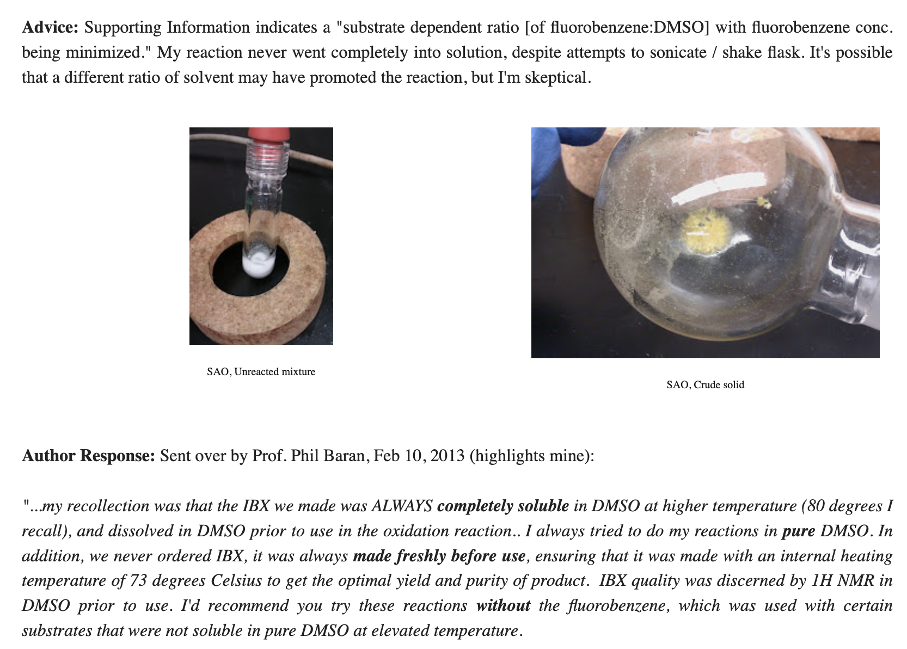

Popular histories of the Reformation typically emphasize the discontinuity between medieval theology and the Reformers. In its simplest form, an account of church history through the Reformation might go like this:
During (and shortly after) the events of the New Testament, there was the “early church,” which assembled the canon of Scripture and worked to understand, organize, and systematize Christian thought.
Over time, the church developed more and more complex systematic theology, pulling from the philosophical tradition of Plato and Aristotle to create a towering edifice of Christian thought (as exemplified by figures like Anselm and Aquinas).
The Reformers (Luther, Calvin, etc) rejected this body of Christian thought and returned to a simplified “sola scriptura” way of interpreting Scripture, which also led them to break from Catholic teachings on a great many topics and ultimately form a new church.
This outline, while basic, is accepted by many Catholics and Protestants. A Catholic might tell the story like this (with apologies to John Henry Newman):
Just like an acorn grows into an oak tree, so do the doctrines of the Church grow out of the kernel of Scripture. The church spent over a millenium carefully developing a body of doctrine and theology (guided by the Holy Spirit)—until the “wild boar” Luther and other Reformers decided, in their arrogance, to start from scratch and reinterpret Scripture according to their own ideas.
This is pretty close to actual Roman-Catholic writings. For instance, Hillare Belloc writes in The Great Heresies that Calvin was “the founder of a new religion“ and the author of “a complete new theology, strict and consistent” that was “in opposition to the ancient body of doctrine by which our fathers had lived.”
In contrast, a Protestant might tell the story like this:
While the early church held to simple doctrines of holiness and righteousness, the institutionalization of Christian thought and the bizarre power structures of the medieval church led to centuries of theological speculation with no Scriptural backing and no real relevance to Christianity as exemplified by Christ. The Reformers returned the church to the simplicity and Bible-centeredness of the early church, thus setting people free from a millenium of papal tyranny.
Although these two tellings are obviously different in framing, both conform to the basic storyline outlined above.
Matthew Barrett is here to tell you that this story is completely wrong. In his book The Reformation As Renewal, Barrett argues that the Reformers saw themselves in continuity with the historical church, not opposed to it. In fact, Barrett argues that today’s “Protestants” are actually the true descendents of the universal “catholic” church (p. 883):
…in Luther’s own mind, his call to reform was not a summons to something modern. His vision for renewal was catholic. Debate may persist over the success of that vision, but no debate should exist over its self-professing identity. In Luther’s own words, “Thus we have proven that we are the true, ancient church, one body and one communion of saints with the holy, universal, Christian church.”
If Protestants today desire fidelity to the history of their own genesis, then they should listen to one of the Reformation’s heirs, Abraham Kuyper: “A church that is unwilling to be catholic is not a church, because Christ is the savior not of a nation, but of the world… We cannot therefore, without being untrue to our own principle, abandon the honorable title of ‘catholic’ as though it were the special possession of the Roman Church.”
What defines a true adherence to Protestantism? To be Protestant is to be catholic. But not Roman.
(Barrett’s using “catholic” here to describe continuity with the historical and universal church; in contrast, “Catholic” or “Roman Catholic” implies submission to the Roman Curia. I’ll try to preserve this distinction throughout this post.)
Barrett’s claim is certain to offend Roman Catholics, and the book is indeed thoroughly anti-Catholic (as befits any Protestant history of the Reformation). But Barrett’s real goal is to convince contemporary Protestants that historical Christian theology is good and worthy of study. He wants Protestants to claim “sounder Scholastics” like Aquinas as part of their tradition—and, where necessary, to be willing to learn from their teachings when they depart from contemporary ideas.
Barrett’s book is long and wandering. While the book roughly follows the intellectual history of the Reformation, he alternates between history of philosophy, historical and biographical sections, and theological polemics (sometimes within the same chapter). To keep this review short-ish and interesting, I’m going to pull out some of the most compelling ideas without necessarily following Barrett’s organization; interested readers should just read the original book.
(To disclaim any potential conflicts of interest: I’m a Reformed-ish low-church Protestant who, while friends with many Roman Catholics, generally disagrees with their theology. I’ll occasionally refer to Protestants as “we” in this post; skeptical or Catholic readers are welcome to excuse themselves from this pronoun.)
* * *
Before I jump into the review: the “history of philosophy” component of The Reformation as Renewal is a big part of Barrett’s construction, but might be hard to follow if you’re not already somewhat familiar with the field. Some brief terms:
Platonism is the Greek philosophical movement, named after Plato, which argues that reality consists of abstract, immutable, and eternal ideas (called Forms or universals) in addition to the physical world. This contrasts with nominalism, which holds that universals aren’t real, and materialism, which argues that the physical world is all that’s real.
Scholasticism was a philosophical movement that sought to apply rigorous Aristotelian reasoning to questions of philosophy. Scholasticism is generally held to begin with Anselm (1033–1109); famous Scholastics include Peter Lombard (1096–1160) Thomas Aquinas (1225–1274), and John Duns Scotus (1265–1308). Aquinas’s massive Summa Theologica is not only the magnum opus of Scholasticism but also one of the most influential theological works, period.
Humanism was an intellectual movement coming out of the Renaissance that emphasized a return to studying the Greco-Roman classics, literature, and art.
Without further ado, then, here are seven ideas that I thought were interesting from The Reformation as Renewal.
* * *
1. Realism and Nominalism
Of all the competing Greek philosophical schools that existed before Christianity, Platonism proved the best match for Christian thought. Barrett quotes Augustine as saying that the Platonists have been “raised above the rest [of the philosophers] by a glorious reputation they so thoroughly deserve” because of how they have “raised their eyes above all material objects in their search for God” (p. 218).
Aristotle with a Bust of Homer, Rembrandt (1653)
While anti-Christian accounts of the early church often cast Christianity as the syncretic offspring of Judaism and neo-Platonism, Barrett disagrees. He argues that Christians adopted the framework and vocabulary of neo-Platonism but not the conclusions—it was Plato’s “transcendent map of reality” (p. 217) which Christians adopted, and not his entire worldview. Following Hans Boersma, Barrett identifies five key distinctives of medieval via antiqua Christian Platonism (pp. 226–227, emphasis added):
Anti-materialism. Christian Platonism claims that bodies and their properties are not the only things that exist.
Anti-mechanism. Christian Platonism maintains that the natural order (including, therefore, physical events), cannot be fully explained by physical or mechanical causes.
Anti-nominalism. Christian Platonism argues that reality is made up not just of individuals, each uniquely situated in time and space, but that two individual objects can be the same in essence (e.g., both being canine) while still being unique individuals (distinct dogs).
Anti-relativism. Christian Platonism rejects the notion, both in terms of knowledge and morals, that human beings are the measure of all things, suggesting instead that goodness is a property of being.
Anti-skepticism. Christian Platonism maintains that the real can in some manner become present to us, so that knowledge is within reach.
To complement the “polemical posture” (p. 227) of this list, Barrett identifies the idea of a “participation metaphysic” as a key positive belief of Christian Platonism. In accordance with Paul’s address at Mars Hill (Acts 17), Christians believe that we “live and move and have our being” in God. Medieval Christian Platonists believed that “the soul can share in the higher level of reality it seeks to know” and that “all true knowledge of the divine, the eternal, and the really real is an exercise in communion” (p. 228).
St. Paul Preaching in Athens, Raphael (1515)
Barrett thinks that the via antiqua was pretty much correct. Unfortunately, late-medieval theologians like Duns Scotus and William of Ockham “cut the tapestry of participation and dispensed with the fabric of a realist metaphysic” (p. 228) in favor of nominalism. Duns Scotus believed that God had a libertarian freedom to do whatever he wanted (“voluntarism”), elevating God’s will above God’s intellect and, according to Barrett, eroding the realist metaphysic of earlier Scholastic thinkers like Aquinas.
William of Ockham took this a step further by denying the existence of universals (p. 251), leading ultimately to the voluntarist via moderna of Gabriel Biel, which described justification as God’s voluntary acceptance of man’s good works, which—although they don’t intrinsically merit God’s favor—are accepted as sufficient through God’s grace. While this might not quite constitute Pelagianism, it’s certainly not too far.
Barrett argues that this “decayed” (p. 283) nominalist late-medieval Scholasticism was the prevailing theological context for the Reformation, and that the Reformers can be understood as rejecting the via moderna in favor of returning to the via antigua of older Scholastics like Anselm and Aquinas. I’ll confess that I find the detailed metaphysics somewhat difficult to parse here, even with helpful diagrams from the Stanford Encyclopedia of Philosophy:
The via antiqua, diagrammed.
As a single explanation for the Reformation, this philosophical line of argumentation is a bit too neat: while the Reformers may have disliked the nominalist via moderna, there was plenty else about the late medieval church that provoked protest, including corruption, indulgences, bad preaching, politics, and so on.
But this line of thinking helps Barrett to explain why the Reformers can agree with Aquinas and earlier Scholastics on so much while writing firmly anti-Scholastic works like Disputation Against Scholastic Theology (Luther, 1517). Barrett argues that the target of Reformation ire was not “all of historical theology” but instead a distinct philosophical movement which, while dominant in the early 1500s, had broken from Church tradition. By rejecting Biel and the via moderna, Barrett claims that the Reformers were actually returning to the tradition of the universal “catholic” church.
(As an aside, I didn’t realize how much some modern-day Christians hated Duns Scotus—according to John Milbank, Duns Scotus was “the turning point in the destiny of the West” and the ultimate author of all sorts of modernist heresies.)
2. The Reformation As Renaissance
The Reformation is often taught as a separate movement from the Italian Renaissance, but Barrett argues that we should see the Reformation as essentially a part of the Renaissance (p. 312, emphasis original):
It is reasonable to ask whether the Reformation was even possible apart from the prior advances of the Renaissance. Rather than labeling the Reformation a “new epoch different from, and in a sense opposed to, the Renaissance” it is better to “consider the Reformation as an important development within the broader historical period which… we continue to call… the Renaissance.”
Both movements were driven by a resurgence of interest in classical texts and ideas, as exemplified by humanist thinkers like Erasmus of Rotterdam (p. 313):
Few Reformers if any could claim they operated within a cultural or ecclesiastical context sanitized from the effects of humanism. Ready access to the Greek text of Erasmus, fresh translations of classical texts, renewed attention to inner spirituality, and ecclesiastical renovation—these and many other factors were advantageous to the advent of the Reformation.
For the Reformers, this meant going ad fontes (back to the sources) and discovering that church fathers like Augustine held beliefs that were at odds with current church doctrine (p. 320, emphases original):
Erasmus’s Greek New Testament gave Luther an opportunity to return to the text afresh and consider whether the soteriology [salvation theology] he imbibed was indeed scriptural. Yet Luther’s breakthrough discovery of justificatio sola fide was due not only to his renewed reading of Paul’s epistles and the Psalms, but also to his study of the corpus of Augustine. It is not an overstatement to say that Augustine’s doctrine of grace set Luther free. Ad fontes was the key that unlocked that discovery.
While Barrett is far from the first person to connect the Renaissance and the Reformation, I thought his discussion of the common intellectual threads tying these movements together was interesting and useful.
3. What Was the Reformation About?
Barrett points out that the Reformers didn’t disagree with mainstream medieval Christian doctrine in the vast majority of areas—instead, they had specific criticisms about soteriology and ecclesiology.
Soteriology is the study of salvation. As discussed above, Catholic theologians like Gabriel Biel emphasized a voluntarist view of salvation in which God chose to reward good works with grace. In contrast, Luther and other Reformers argued that salvation was solely the result of faith (sola fide), and that God imputes righteousness to believers based on faith. (Although Calvin gets popular credit for being “the predestination guy,” Luther was committed to this point as well, as demonstrated by his 1525 work On the Bondage of the Will.)
Luther at the Diet of Worms, Anton von Werner (1877)
This view of salvation was, according to Barrett, in accordance with previous church teachings. He quotes Luther as discovering salvation sola fide in Augustine’s The Spirit and the Letter, where Luther found “contrary to hope” that Augustine “interpreted God’s righteousness… as the righteousness with which God clothes us when he justifies us” (pp. 389–390), in contrast to the works-based soteriology of the Roman church.
The debate over soteriology quickly escalated into a debate about ecclesiology (or the study of the church). The popes argued that only they could authoritatively incorporate Scripture and that their interpretation was thus correct by definition; in contrast, the Reformers argued that papal views were in contrast with church history. In Barrett’s words (p. 415):
Rome elevated tradition to a second source of revelation, sometimes even a superior source. Luther and the Reformers, by contrast, believed tradition was an authority, but a ministerial authority, subservient to Scripture, its magisterial authority.
These debates are well-known and can be found in any history of the Reformation. What Barrett wants to show is that these are relatively specific debates. There are many other areas of theology where the Reformers could have broken with the theological status quo and didn’t. To quote Barrett (pp. 142–143, emphases original but paragraph break added):
…the continuity between the Scholastics and the Reformers dwarfs their discontinuity. For example, in Prima Pars [of the Summa Theologica] Thomas [Aquinas] treated the knowledge of God, the inspiration of Scripture, the existence of God, divine perfections, the Trinity, creation ex nihilo, the imago Dei, the human soul, divine providence, angels, and more. By and large, the Reformers did not need to address these loci, some of which were essential to orthodoxy. To do so in front of Rome could have thrown into question their own orthodoxy.
By contrast, Rome and Reformers alike agreed on classical theism’s articulation of these tenets… The point deserves emphasis: Scholastics like Thomas constructed a massive foundation grounded in classical Christian orthodoxy, and the Reformers never felt the need to address a majority of its loci because to disagree was to diverge from orthodoxy itself and its accompanying theological parameters. Their silence should not be taken as divergence but conformity, a quiet testimony to their catholicity. That should change current perspectives which so major [sic?] on discontinuity that the massive amount of continuity is either neglected or denied.
Barrett argues that the similarities between the Reformers and church fathers like Aquinas far outweigh their differences, and by extension that Protestants today should see themselves as largely in communion with Aquinas and other patristic or medieval Christian thinkers.
4. The Reformers’ Catholicity, In Their Own Words
To show that the Reformers thought that they were aligned with historical Christian tradition, Barrett cites from their own works at length. In his response to Cardinal Jacopo Sadaleto, Calvin writes that “our [Protestant] agreement with antiquity is far closer than yours” and that the Reformation was an attempt “to renew that ancient form of the Church, which, at first sullied and distorted by illiterate men of indifferent character, was afterwards flagitiously mangled and almost destroyed by the Roman Pontiff and his faction” (pp. 2–3). Calvin goes on to accuse the Roman church of disgracing the memory of the true Christian church (p. 4):
Where, pray, exist among you any vestiges of that true and holy discipline which the ancient bishops exercised in the Church? Have you not scorned all their institutions? Have you not trampled all the canons under foot? Then, your nefarious profanation of the sacraments I cannot think of without the utmost horror.
Similarly, Luther vigorously affirms that “Protestant” Christianity, and not Roman Catholicism, is in continuity with the ancient and true Church (pp. 4–5):
…when Henry of Braunschweig accused Luther of betraying the church universal with innovation and heresy, Luther became furious. “They allege that we have fallen away from the holy church and set up a new church.” No, Luther said in response, “We are the true ancient church… you have fallen away from us.”
These quotes illustrate, at a minimum, that the Reformers did not believe the “pop” view of the Reformation I outlined in my introduction. Luther believed that him and his fellow Protestants “belong to the ancient church and are one with it… for whoever believes as the ancient church did and holds things in common with it belongs to the ancient church” (p. 882). Regardless of one’s personal feelings about the catholicity of the Reformation, it’s tough to deny that the Reformers themselves saw themselves as catholic.
5. Biblicism and Heresy
Church tradition has a bad reputation among many Protestant groups. As discussed above, Barrett clarifies that the Reformers didn’t reject the authority of church tradition; they just saw it as a “ministerial authority” and not a "magisterial authority” equal to God’s written word (p. 415).
Barrett contrasts this ministerial authority with what he terms “biblicism,” the incorrect elevation of a “restrictive hermeneutical method onto the Bible” (p. 21). Biblicism is characterized by, among other things, the undervaluing of philosophy in a way that is “especially allergic to metaphysics,” overemphasis of human authorship, irresponsible proof texting that “fails to deduce doctrines from Scripture” (p. 21), and an ahistorical mindset that verges on C. S. Lewis’s “chronological snobbery.”
Biblicism is, in Barrett’s view, a mainstay of modern Protestant evangelical hermeneutics. But biblicist interpretation was also present in the Reformation: various groups followed the Reformers in rejecting Rome but did so in a way that split with mainstream Christian theology even more. To name just a few of the beliefs that the “radical Reformers” held:
John Agricola argued that it was not necessary to preach law, only grace, in an antinomian echo of modern free-grace theology (p. 535).
Thomas Müntzer and the “Zwickau prophets” argued that the true church had been lost after the second century and was being reestablished in the Reformation. They also advocated for Old Testament law in what’s basically an early form of theonomism (pp. 608–609).
Early Anabaptists like Menno Simons rejected the council of Chalcedon and denied that Jesus was born of Mary’s flesh, as that would imply that he inherited the imperfections of flesh (p. 641).
Anabaptists also believed that the true church couldn’t be compromised by contact with the world and advocated for Donatist second-degree separation: “if someone was banned, the Anabaptists must shun not only that person but everyone who disrespected the ban and continued to associate with the banned individual” (p. 640).
These beliefs were all rejected by the mainstream Reformers, who as discussed above were uninterested in relitigating mainstream catholic doctrine. Instead, the Reformers took steps to educate people in proper Scriptural and theological understanding. In Geneva, Calvin worked to educate pastors and students in theology, Biblical languages, patristic and classical writings, and sound exegesis (even going so far as to found the Geneva Academy in 1559) (pp. 712–718). Unlike the anti-intellectual biblicism of the radical Reformers, the mainstream first- and second-generation Reformers believed in historically grounded scholarship.
I found this section particularly interesting because almost all of the beliefs advocated by the radical Reformers are still around today: free-grace theology is common, theonomian beliefs are gaining in popularity (as I mentioned in my review of Five Views on Law and Gospel), and separatist strategies remain appealing to certain Christian subgroups. It’s helpful to remember that the Reformers already considered—and rejected—these ideas in the 1500s.
6. The Counter-Reformation and the Council of Trent
Like many Protestants, Barrett sees the Council of Trent (1545–1563) as the moment where the Roman Catholic church went irreparably off the rails. Barrett emphasizes the internal dissent at Trent around issues like whether the Bible should be vernacular or in Latin (Cardinal Madruzzo opposed vernacular Scripture, while Cardinal Pacheco favored it; p. 856), whether the will was captive to sin as Luther claimed (Tommaso Sanfelice agreed but Dionisio de Zanettini disagreed; p. 858–859), and whether Scripture was superior to church tradition (Jacopo Nacchianti agreed with the Protestants that this was true; p. 855).
Council of Trent, Pasquale Cate (1588)
In the end, the Council of Trent took a decidedly anti-Protestant stance. In addition to cleaning up and reforming a lot of corruption and doctrinal chaos, the final decrees of Trent:
Affirmed that priests and bishops, and only priests and bishops, could forgive sins (contra Luther’s doctrine of the “priesthood of believers”).
Confirmed that non-clergy did not have to receive the cup during the Eucharist.
Condemned those who thought Mass should be celebrated in the vernacular.
Reemphasized the importance of the church hierarchy, again against the “priesthood of all believers”.
Trent also rejected any doctrine of sola fide, declaring that those who held such beliefs were latae sententiae (i.e. automatically) excommunicated. See Session 6, for instance:
If any one saith, that by faith alone the impious is justified; in such wise as to mean, that nothing else is required to co-operate in order to the obtaining the grace of Justification, and that it is not in any way necessary, that he be prepared and disposed by the movement of his own will; let him be anathema.
Modern Protestant theologians agree. Barrett approvingly quotes Jaroslav Pelikan about the impact of Trent (p. 879, emphasis and ellipses original):
Trent seemed to Chemnitz to be condemning not only the Protestant principle of Luther’s Reformation, but considerable portions of the Catholic substance it purported to defend. For the weight of the Catholic tradition supported justification by grace alone without human merit, particularly if “Catholic tradition” included, as it did for Chemnitz, not merely learned theology, but also “all prayers of the saints in which they ask to be instructed, illumined, and sanctified by God. By these prayers they acknowledge that they cannot have what they are asking for by their own natural powers.” … Thus he demonstrated the truly traditional and Catholic character of the Reformation doctrine, implying that by closing the door to this doctrine Trent was making Rome a sect.
To Barrett, Trent is the moment when the “Roman Catholic” church broke once and for all with the true, catholic, and eternal church. Before Trent, it was possible that the Curia could change course to realign itself with the historical church; after Trent, schism was inevitable.
7. The Reformers, Schismatics?
While popular Roman Catholic apologetics paints the Reformers as schismatics who shattered the eternal unity of the church (see the quotation from Belloc above), Barrett points out that the Reformation was just the latest in a long train of schisms that had already shattered the church.
The Orthodox churches had split from Rome in 1054, and the intervening centuries had seen repeated schisms/revolts against Roman-Catholic spiritual abuses that mostly ended in the brutal murders of the non-Roman parties (e.g. the Lollards, the Hussites, and the Waldensians). Seen thusly, the Reformation was just the last and most successful attempt by Christians to defy the increasingly authoritarian and ahistorical doctrines espoused by the Roman Curia—and efforts to put the blame of “schismatic” on the Reformers get the blame completely backwards.
(Roman Catholics will probably not appreciate this explanation.)
* * *
After all these details (and many more I haven’t bothered to summarize here), how well does Barrett’s thesis hold up? Following precedent from other fields, we can subdivide Barrett’s thesis into a “weak” claim & a “strong” claim and evaluate them separately.
The weak thesis of The Reformation as Renewal is that the Reformers saw themselves as more catholic than the Roman Catholics; in other words, that they saw themselves in community and continuity with the historical church, rather than “starting over” in a radical Biblicist way. Barrett defends this thesis with strong evidence—see section #4 above—and I think it’s tough to dispute his conclusion.
The strong thesis of The Reformation as Renewal is that the Reformers were right to believe this. This is significantly harder to prove; even Barrett has to concede that Luther has some significant points of disagreement with the likes of Anselm and Peter Lombard, and it’s tough for me to judge whether these disagreements are more or less substantial than the analogous differences that the 1500s-era Roman Catholic church might have had. I think it’s difficult to escape the conclusion that the Reformation did represent a significant change in theology and Christian practice—but not an absolute change—and I find Barrett’s efforts to minimize this point misleading.
* * *
As astute readers may have surmised, Barrett is not interested in writing a neutral or objective history of the Reformation—he has an axe to grind, and he makes his points early and often. Accordingly, Roman Catholics are unlikely to enjoy or be convinced by this book; Barrett has no patience for Rome or its doctrines and misses no opportunity to attack it. A less pugnacious book would probably be more ecumenical, but that’s not Barrett’s aim.
Instead, Barrett is writing for his fellow Protestants. The Reformation As Renewal makes a strong case that Protestants should take church history seriously and hesitate to dismiss millennia of thought and tradition. Figures like John Chrysostom, Maximus the Confessor, and Gregory the Great (whom Calvin called “the last good pope”) aren’t just part of the Catholic spiritual heritage; the Reformers viewed these figures as their spiritual ancestors and, Barrett claims, so should we.
Despite my high-level qualms, I think the book is effective towards this end. Most Protestants are consciously or subconsciously comfortable with ignoring anything that happened between c. 400 and 1517. Many extend this even to the Reformers: as one early reader said: “Why should I care about what Luther said about something?" Faced with a confusing morass of historical and theological terms, it’s tempting for modern Protestants to simply discard all previous Biblical interpretation and start ex nihilo, one church at a time.
Barrett’s rhetoric works well when he combats this impulse. By examining in exhaustive detail how the Reformers interacted with their own predecessors, The Reformation as Renewal shows how Protestants can balance sola scriptura with church tradition. Luther didn’t accept what Ockham, Aquinas, or even Augustine said as binding—but he read and understood their thinking before striking out on his own, much as earlier church fathers had been in dialogue (and disagreement) with each other. Barrett’s account demonstrates that Protestantism doesn’t necessitate biblicism, despite modern tendencies.
One might reasonably ask, though, “so what”? If Protestants accept that they’re part of the rich intellectual tradition of the historical church and start reading catechisms, creeds, & patristic writings, what do we expect to change? What’s the practical consequence of viewing the Reformation as renewal, aside from antagonizing our friendly neighborhood Roman Catholics?
For Barrett, the answer to this question appears to be “reject congregationalism & adult baptism and become Anglican.” Barrett made waves in Christian circles last year when he renounced Southern Baptism and announced that he was joining the Anglican church. You can read his statement here; I don’t find his reasons very compelling and neither do Baptists.
(In one of ChatGPT’s funnier moments as an editor for this post, it asked whether Barrett’s writing was “smuggling in Anglican ecclesiology under cover of patristic appreciation.” A fair question!)
More generally, modern low-church Protestantism often suffers from the problem of the superstar founder–pastor who’s singlehandedly responsible for the entire church’s theology, teaching, and operations. This leaves churches susceptible to the whims of a single person’s decisionmaking, withpredictableconsequences. While “caring about history” won’t by itself fix the weird culture and incentives of the 21st-century church, one can imagine that more historically grounded churches might be less reliant on a single individual and more resilient.
* * *
More broadly, though, Barrett’s book reminds me that ideas matter. We live in a nominalist age, where people are quick to disregard the importance of metaphysics and universals (e.g.). When reading about debates like “whether Christ has one energy or two energies in the hypostatic union”, it’s tempting to just say “who cares?” and dismiss the whole debate as irrelevant & pointless.
(I complained about this in last year’s review of The New Roman Empire—it’s impossible to study Byzantine history without understanding various Church councils and theological debates, yet Kaldellis writes his history from a dialectical–materialist perspective that basically discounts theology altogether.)
Barrett’s book brings me back to a world in which theological ideas were seen as of first importance, to the extent that thousands of people were willing to die for them (and did). While I don’t hope for a return of the French Wars of Religion, I think Barrett’s book is a useful antidote to the theological nihilism of the modern church.
I’ll close with this famous quotation from Machiavelli, which more than anything else captured my experience reading The Reformation As Renewal:
When evening comes, I return home and go into my study. On the threshold I strip off my muddy, sweaty, workday clothes, and put on the robes of court and palace, and in this graver dress I enter the antique courts of the ancients and am welcomed by them, and there I taste the food that alone is mine, and for which I was born. And there I make bold to speak to them and ask the motives of their actions, and they, in their humanity, reply to me. And for the space of four hours I forget the world, remember no vexation, fear poverty no more, tremble no more at death: I pass indeed into their world.
For weeks I would come home from my job, make dinner, play with my kids, put them to bed, and then open this 900-page tome and, for a few hours, lose myself in the intellectual world of medieval Europe, full of debates about analogical & univocal predication and similarly foreign concepts to the modern mind. If you too want this experience, then The Reformation As Renewal is the book for you.
Thanks to the friends and early editors who helped me attempt to make sense of these ideas; as usual, any errors are mine alone.
Long ago, there were no software companies. In the age of System/360, vertically integrated companies like IBM were responsible for virtually all aspects of the end product they sold, from hardware to operating system to end-user applications. Then, the value chain started to diversify: Microsoft allowed software and hardware to become decoupled, and then a variety of application-specific companies started to pop up (like Lotus). Today the software ecosystem is incredibly diverse, and even simple software companies typically rely on a web of vendors and sub-vendors.
I call this process “horizonalization,” because it reflects a move from vertically integrated monoliths towards an ecosystem of companies aimed at horizontally integrating a given capability:
We can imagine two reasons why this transformation might have happened:
The technology got more complex. Software is much more complex than it used to be, and it’s no longer possible for most teams to build the entire stack themselves—as complexity rises, more teams will choose “buy” over “build.”
The market got larger. There’s a certain minimum practical size for companies, and as the market grew it could accommodate more vendors.
Ronald Coase’s 1937 paper “The Nature of the Firm” proposes a theoretical framework that will be useful for this discussion. Coase argues that the natural size of companies is an equilibrium between competing factors. Making companies bigger makes work easier by diminishing “transaction costs”: doing work with external parties requires coordination, NDAs, invoices, taxes, and so on, while doing work with someone inside the same company is comparatively easy. Unfortunately, larger companies also become less efficient, because “the entrepreneur fails to place the factors of production in the uses where their value is greatest” (pp. 394–395), i.e. managers do a bad job. So in practice these opposing forces balance and companies end up at a size somewhere between “everyone is their own company” and “there’s only one company.”
Viewed this way, horizontalization is a natural response to increasing market size and complexity. As the market became big enough that there could be “a database company” or “an ads company,” it became advantageous for these capabilities to become their own firms rather than stay part of a single monolithic ur-company. These same firms, once independent, were able to innovate and find new markets and technologies more rapidly than they could have before, further growing the sector and continuing the process.
* * *
As readers may have inferred from the title, I think the same transformation is happening in biotech and drug discovery today. Fifty years ago, drug discovery was almost entirely vertically integrated. New biotech companies had to rebuild almost every capability themselves from scratch (The Billion-Dollar Molecule documents Vertex doing this in the 1980s).
In the 2000s and 2010s “virtual biotech” companies that outsourced most or all of the chemistry and biology work to CROs and CDMOs became common—see this 2012 article from Derek Lowe, which discusses the change in the industry. These virtual biotechs often had no aspiration to be around forever; many single-asset virtual biotechs aimed to pursue a given biological target through early-stage clinical trials and then get bought by pharmaceutical companies, who would fund Phase III trials and subsequent manufacturing & distribution.
Not coincidentally, this time period also saw CROs and software companies like Schrodinger and Benchling become important ecosystem vendors. As the expected life cycle of therapeutics companies decreased, it became important to conserve cash and not build out unnecessary infrastructure that wouldn’t pay for itself within a few years. Increasing amounts of research started to be done through research-as-a-service models, and the burden of building efficient high-throughput research processes shifted away from internal teams and towards vendors. Basically, the pendulum moved away from “build” and towards “buy.”
Today, I think this trend is continuing or even accelerating. Here’s a few case studies:
Plasmidsaurus is a company that sequences DNA and RNA really cheaply and really quickly. That’s it! (For more details, see the Owl Posting writeup.)
Adaptyv is building a “fully automated protein foundry,” or essentially a next-gen protein CRO that generates wet-lab data to validate or train ML models.
Cradle is a protein-engineering-as-a-service company that helps therapeutic and industrial customers design better proteins.
BioRender sells software to make beautiful biological figures. You might think this sounds like an incredibly niche business, but a recent secondary round valued the company at 900M!
And, since I started working on this essay, model companies like Noetik, Chai, and Boltz have all announced massive partnerships with pharma.
Despite these examples, horizontalization is harder in biotech than in software. Broadly, transaction costs are higher—pre-clinical IP is very sensitive, making companies more suspicious of outside vendors—meaning that it’s harder to partner externally and easier to bring capabilities in-house. The total biotech market is also smaller, meaning that there are fewer potential customers for any new vendor and thus fewer possible niches.
But the growing complexity of drug discovery in the era of AI and lab automation counteracts these trends somewhat, because all this complexity can only be managed by outsourcing capabilities to vendors. Imagine trying to build the equivalent of the OnePot self-driving lab within every new oncology startup! Every new layer of complexity creates opportunities for vendors to decrease unit costs by increasing upfront capital expenditure; scale economies create the incentives for horizontalization.
* * *
I think that horizontalization is good for the world. One reason is just that horizontalization creates efficiency—this is a pretty obvious point, going back all the way to Adam Smith, but it still needs to be said. Companies that specialize in a given technology, service, or product can typically do a better job than a team trying to add yet another random capability. That’s why Plasmidsaurus is better at sequencing things than you are.
But horizontalization also increases the field’s institutional memory. Early-stage biotech has weird company dynamics—as discussed above, most therapeutics companies survive only a handful of years, ending their existence either through acquisition or quiet dissolution. (In many cases the preclinical research team disbands even if the legal entity technically survives.) This means that there’s a lot of tacit institutional knowledge which gets lost or dispersed. A DNA-encoded library team might have developed a set of protocols, workflows, and practices which led to incredible performance, but if their company lays off all the research staff, then all this has to be recreated de novo wherever these scientists work next.
Coupled with the atmosphere of secrecy in the industry, the overall effect is that best practices are slow to diffuse in early-stage drug discovery. Horizontalization provides an opportunity to fix this. To use the specific example of DNA-encoded libraries (DELs) again, companies like Om and Leash can develop DEL-related expertise that far exceeds what any single therapeutics can achieve, and keep this knowledge and “process power” alive longer than the typical lifespan of a therapeutics company.
If horizontalization is happening, and will happen more in the future, what are the consequences? Here’s some speculation:
1. There are more viable biotech-adjacent businesses than people think. Each new biotech-adjacent company that gets created becomes a new potential customer for another vendor, increasing total market liquidity and creating new opportunities for innovation. It’s not quite clear how far these trends will go, but I think the prevailing VC sentiment that “the only way to monetize biotech innovation is through therapeutic assets” is already wrong.
2. Transaction costs will matter more. Right now, it’s pretty easy to start using a different software vendor (just sign up and point your code at the right API endpoint) but relatively difficult to start working with a new vendor in biotech. There are good reasons for this. As discussed above, drug discovery is a very IP-sensitive industry, and the wrong chemical structure in the wrong hands might cost millions or even billions of dollars.
Rejecting all external vendors and internalizing every function can’t be the right answer, as increasing complexity will make monoliths less and less capable over time. Instead, the industry needs to find ways to lower transaction costs without compromising on IP or security. The company that figures this out will be a big winner.
Both of these predictions might be wrong! But, at a high level, I think horizontalization is both inevitable and beneficial; I look forward to the day when biotech has as many interesting and competent vendors as software, and I’m working to try and make Rowan one of those vendors.
Thanks to Ari Wagen for helpful conversations on these topics and for editing drafts of this essay.
Strangely, Roberts’ Napoleon reminded me a lot of Elon Musk—incredible drive and energy, mind-melting attention to detail, and a culture of micromanagement and direct control which perhaps more than anything else drove him to ruin. (I hope Elon’s story has a happier ending.)
#2. Magda Szabo, The Door #3. Marc Benioff, Behind The Cloud #4. James Clavell, Shogun
I distrust most historical fiction, but this book was actually good. Hosokawa Gracia is one of history’s great Christian heroes.
#5. M. Mitchell Waldrop, The Dream Machine #6. David Sirlin, Playing to Win
Many ex-academic startup founders should read this book.
#7–8. Solvej Balle, On the Calculation of Volume (volumes 1 & 2)
As recommended by Santi Ruiz; a great read about how the British state adapted and transformed during the Napoleonic wars. Roberts credits the British privatization of the military supply apparatus to much of Britain’s success in the war, which I found interesting. This book also helped me understand why government procurement is so crucial and so regulated today.
#10. Chris Voss, Never Split the Difference #11. James Scott, Seeing Like a State
This book is ubiquitous in grey-tribe discourse these days, which pushed me to avoid reading it because it seemed overrated. It turns out I was wrong and it’s properly rated—Scott’s way of thinking gave me a whole new set of mental models for legibility, system fragility, and how we structure knowledge. Definitely worth a read.
#12. F. L. Ganshof, Feudalism #13. Werner Krusche, And God Spoke with His People #14. David Chandler, The Campaigns of Napoleon
While the two previous Napoleon books I read were very good, this book is one of the best books I’ve read on any topic. Many biographies (including Roberts’ above) try to avoid getting side-tracked by military history, preferring instead to focus on describing the man behind the campaign. Chandler does the opposite—he focuses only on the military aspect of Napoleon’s life and isn’t afraid to examine his historical models, his moments of genius, and his myriad mistakes.
Paradoxically, this focus ends up giving the reader a clearer picture of Napoleon as a person, because military campaigns were where he devoted the bulk of his energy and intellect. The book also has incredibly beautiful maps; I learned a lot of European geography trying to follow the various campaigns.
Eriksen is a weird guy; at once a hardcore RETVRN poaster and an avowed practicing bigamist. I guess polygamy is the most Lindy thing of all if you go back far enough?
#16. Eric Raymond, The Cathedral and the Bazaar
Venerable but still the best piece I’ve read on the dynamic between open- and closed-source software. Raymond argues that the open-source-software community operates as a gift economy, and that there are powerful incentives for infrastructure/protocols to become open (but not applications). This book has been useful in informing how we think about open-source strategy at Rowan.
#17. Andy Weir, Project Hail Mary
I really disliked this book. Weir’s science fiction is grimly impersonal in a way that makes me sad—the fiction centers on science, not people, and even though I like science I prefer my novels to be about people.
#18. Martyn Rady, The Middle Kingdoms
As recommended by Tyler Cowen. A good overview of Central European history, although it left me wanting more details on almost everything.
#19. Vernor Vinge, A Deepness in the Sky #20. John Mark Comer, Practicing The Way
This book was recommended to me, but I’m not a huge fan. Other people have written good critical reviews of this book—see inter aliaKevin DeYoung and Wyatt Graham—so I’ll leave it at that.
#21. Phillips O’Brien, How the War Was Won
O’Brien argues that the popular narrative around World War II is wrong, and that brute economic output as expressed through air and sea power was the primary factor leading to Allied victory. It pairs nicely with Britain Against Napoleon (book #9) and has influenced my thinking about present and future wars.
#22. Ronald Rolheiser, Domestic Monastery
The central idea of this book is that the mayhem of family life can create spiritual formation in much the same way that monastic discipline does—through constant reminder that our life and time is not ours, but should be spent in love and service. This idea is powerful.
#23. Five Views on Law and Gospel (by various authors)
I tried and failed to write a full blog post about this book for months. Briefly—the story of the Bible, dramatically abbreviated, goes something like this (not theology advice):
God makes people, who live in right relationship with him.
But the people sin, breaking this relationship, and death enters the world.
God gives his people laws, like the Ten Commandments, to be reconciled to him.
But people are sinful and don’t obey the laws.
God sends his Son to live a perfect life, die to pay the price for our sin, and be raised to eternal life.
People can now be reconciled to God, even though they’re still sinful.
We await the day when God will make the world anew without sin.
This basic outline is pretty accepted by all Christian denominations, although people might quibble with the details—Catholics and Protestants disagree on the mechanics of #6, for instance. A critical reader might, however, have some questions. What’s the point of #3 and #4 above? If God’s people never followed the law, why was it there at all? And was that just a weird tangent in the history of salvation, or do these laws still matter at all today?
While these questions may seem rudimentary, they’re actually quite controversial—John Wesley wrote that “there are few subjects within the whole compass of religion so little understood as this.” Martin Luther and John Calvin, two giants of the Reformation, wrote at length about these questions, and they continue to be debated by Christian scholars to this day. But unlike other open theological questions, like Calvinism vs. Arminianism, many Christians don’t even realize that there are a range of opinions here or that people disagree at all on these issues.
This theological issue also has important real-world consequences. If the law of Moses has enduring moral validity, then the Old Testament’s teachings on the Sabbath, fasting, tithing, and usury might still be binding to modern Christians; if not, then the teachings probably aren’t. More dramatically, movements like Christian Reconstructionism seek to rebuild all of modern society around the Mosaic Law—which has pretty big implications. These movements have gained a lot of traction on the right in recent years. A recent Politico article on the influential “New Right” pastor Doug Wilson cited R. J. Rushdoony, the “father of Christian Reconstructionism,” as a key intellectual influence (emphasis added):
In response, [Wilson] started reading books by a group of conservative Reformed theologians — writers like Francis Shaeffer, who posited that all knowledge was grounded in the truth of Biblical revelation, and R.J. Rushdoony, who argued that all Biblical law, including the Old Testament law, still applied to the contemporary world.
(Grouping Schaeffer with Rushdoony here is wild.)
Five Views on Law and Gospel directly addresses the question of how law and gospel intersect. In the book, five Protestant theologians (Willem VanGemeren, Greg Bahnsen, Wayne Strickland, Walter Kaiser, and Douglas Moo) each write an initial opinion piece, and then every other author responds with their own essay. This makes for a fascinating but somewhat schizophrenic read—the argumentation is scattered across 25 different essay-length pieces, so writing a proper review proved to be substantially more intellectual effort than I could commit. (My draft blog post is 11 pages of increasingly inchoate theological ramblings.)
If you’re interested in the topic, this is a great book.
#24. Hillaire Belloc, The Great Heresies #25. John Mark Comer, The Ruthless Elimination of Hurry
A helpful overview to the parables of Jesus, with useful literature review broken down by parable. (I read this to prepare for hosting a study of the parables, and found it useful.)
#27. Dane Ortlund, Gentle and Lowly #28. Yukio Mishima, The Sailor Who Fell from Grace with the Sea
Just fantastic.
#29. Anthony Kaldellis, The New Roman Empire
As recommended by Tyler Cowen. A great introduction to the history of the “Byzantine” empire (a term which Kaldellis rejects); unfortunately, his takes on church history seem pretty suspect overall, which makes me uncertain how much to trust his opinions on other topics.
I recommended this book to someone else, who agreed that “his church stuff is rough” and wrote back:
[Kaldellis] has me reflecting on the modern failing for people to believe that humans do act out of ideological belief, i.e. it’s not just a mask for some other desire.
I think this is right. It’s impossible to understand Athanasius of Alexandria without first accepting that he’s primarily a theological thinker, and that everything else flows out of his faith (and not vice versa). Dialectical materialism this is not…
#30. Eric Berger, Reentry #31. Reed Hastings, No Rules Rules #32. Emmanuel Le Roy Ladurie, Montaillou: The Promised Land of Error
#34. William Shakespeare, Coriolanus #35. Donald Braben, Scientific Freedom: The Elixir of Civilization
I’m a bit skeptical of Braben’s view of scientific incentives; I tend to favor Eric Gilliam’s view that some pressure from real-world applications can give scientists a push towards useful discoveries, while Braben seems to think that just letting scientists follow their curiosity without constraints or incentives is key. Maybe I’m too cynical, but this feels like Emile for science.
#36–39. Orson Scott Card, the Ender’s Shadow series #40. B. B. Warfield, The Plan of Salvation #41. Helen Castor, The Eagle and the Hart
#42. William Shakespeare, Richard II #43. Alfred Bester, The Stars My Destination #44. Michael Kempe, The Best of All Possible Worlds: A Life of Leibniz in Seven Pivotal Days
#46. Bryan Burrough and John Helyar, Barbarians At The Gate
An account of the 1988 leveraged buyout of RJR Nabisco. I didn’t realize that “corporate finance thriller” was a genre I would love, but I couldn’t put this book down—I’m upset I didn’t read it sooner.
Days of Rage, a later book by Burrough, is also excellent.
#47. Dan Wang, Breakneck
The first book I’ve ever pre-ordered. I generally thought this book was good and interesting throughout; it leaves me with a lot of questions, but that’s to be expected. Wang’s chapter on the one-child policy was horrifying; from a consequentialist point of view, Paul Ehrlich must be one of the world’s greatest villains.
#48. Soren Kirkegaard, Fear and Trembling
Read in preparation for my trip to Copenhagen.
#49. Ivan Illich, Gender #50. Ivan Illich, Deschooling Society
Mary Harrington has recommended Illich’s writings before on her Substack (e.g.), which pushed me to read these books. Both were thought-provoking and worth reading; I’m still digesting the ideas and expect to be for some time.
To give a flavor of the argument: in Deschooling Society Illich argues that school and other modern institutions confuse process and substance, making our values like health and learning "little more than the performance of the institutions which claim to serve those ends" and creating “psychological impotence and modernized misery.” I’m not fully convinced by his proposed solutions, but I think a lot of his criticisms of formalized education ring true and dovetail nicely with Seeing Like a State (book #11).
#51. Robert Hughes, The Fatal Shore
As recommended by Misha Saul. This one shocked me a bit—I had no idea how bizarre and horrible the early history of Australia was. Well worth a read.
#52. Robert Massie, Peter the Great: His Life and World #53. Alistair MacIntyre, After Virtue
Sadly, another book I only read because of an obituary.
MacIntyre opens After Virtue by comparing ethical discourse in our society to a post-apocalyptic world in which people use relics of a distant age without understanding how they work or where they come from (a la Canticle for Leibowitz). As someone without many natural philosophical inclinations, I found parts of this book a bit tedious—but I’ve found myself bringing it up constantly in conversation and argumentation since I finished, which is high praise.
#54. Tim Blanning, Frederick the Great #55. Iain Banks, Consider Phlebas #56. Joshua McNall, The Mosaic of Atonement
McNall argues that most Protestants’ understanding of penal substitutionary atonement is wrong, and that we should be thinking more about Christus Victor. I didn’t love the writing, but the argument is solid.
#57. Josef Pieper, A Brief Reader on the Virtues of the Human Heart
As recommended by Santi Ruiz.
#58. Joel Mokyr, A Culture of Growth
Our new Nobel Laureate in Economics! A few observations from this book:
Mokyr highlights Francis Bacon and Isaac Newton as the top figures in the Scientific Revolution. Newton obviously remains highly rated, but I know very little about Francis Bacon, perhaps because his ideas are so dominant today that nobody bothers to read him?
Mokyr points out that many scientific societies were originally founded around the love of practical knowledge for the betterment of society—what happened, folks? Scientists’ narrow-minded conception of what science is or should be is holding them back (previously on the blog).
Mokyr argues that Europe experienced the industrial/scientific revolution because it maintained a unified intellectual culture despite political fragmentation, leading to economies of scale in ideas without the capacity for any single actor to repress or censor ideas (as happened in Ming China). I’ve heard variants of this argument before, but Mokyr makes it particularly well.
Mokyr also points out that the “republic of letters” (and academia today) operates as a status-focused gift economy—just what Raymond argues about open-source software (book #16, vide supra). I’d never made this connection before.
#59. Tyler Cowen, Stubborn Attachments #60. Jerusalem Demsas, On the Housing Crisis #61. Thomas Pynchon, Inherent Vice
I also watched the movie, which was actually quite good.
#62. George Eliot, Middlemarch
Yeah, okay, I admit I’m a few months (or years) late to the party here. Middlemarch is a good book, but I don’t think it’s “the best novel ever” like some have said; I prefer either The Brothers Karamazov or Infinite Jest, to say nothing of dark-horse candidates like Kristen Lavransdatter. But I don’t regret reading it. Eliot captures the emotion of unsatisfied ambition and personal disappointment perhaps better than anyone else I’ve read?
#63. Gary Kinder, Ship of Gold in the Deep Blue Sea
I also didn’t finish a few books:
I hated John Barth’s Giles Goat-Boy so much that I stopped reading after a few hundred pages. I truly don’t know what people see in this book.
I read most of Tim Keller’s The Meaning of Marriage, which was the suggested reading for a class I helped out with at church, but missed a few chapters in the middle.
I started Calvin’s Institutes but—shocker—didn’t finish it. I’m reading the Battles translation, which came highly recommended, and I’m liking it so far.
I’ve started D. A. Carson’s commentary on Matthew but haven’t made much progress yet. Next year!
And I’m partway through Roger Chickering’s history of the German Empire (1871–1918), which is good so far.
If you’ve made it this far, thanks! I find myself in a contemplative mood, and I want to share (1) a brief reflection on the year’s events, (2) a few thoughts around ambition, and (3) some of the cocktails that Chloe and I enjoyed in 2025
* * *
The past year was a big one for our family. In no particular order: our company grew a lot (and in too many ways to recount here); I spoke at three universities and five conferences; my wife quit her job; we helped lead two marriage classes and a Romans bible study; we planned and took our first “solo” international trips, to Croatia and Denmark; I made Macau tamarind pork constantly; I broke my foot and got rhabdo; my son learned how to read; my daughter learned how to speak; and we had a third child (now almost a month old). Looking back over all of this, I think the undeniable conclusion is that I’m becoming middle-aged.
If you’ve been a part of this journey at all—thanks! I’m incredibly grateful to lead a busy and interesting life and for all the persons who populate it, both professionally and personally.
* * *
I’ve become more bothered by the cultural discourse around ambition. To both east- and west-coast crowds, ambition is something that’s good. We celebrate the founder tackling an ambitious problem, the politician with bold new ideas, or the writer aiming to reshape how society thinks about a given topic and achieve “thought leadership.” And if we define ambition simply as the desire to make the world better than it is, then it seems obvious that we should all be as ambitious as possible.
But this doesn’t seem to comport with other sources. The Bible verse I’ve found myself reflecting on is 1 Thess 4:10–12 (emphasis added):
But we urge you, brothers, to do this more and more, and to aspire to live quietly, and to mind your own affairs, and to work with your hands, as we instructed you, so that you may walk properly before outsiders and be dependent on no one.
Paul is saying something surprising: that we ought not to try and disrupt the world as much as possible, but instead we should be content to live inwardly focused “quiet lives” where we tend our own gardens and keep to ourselves. Living quietly should be our aspiration. It may not be something we can always achieve, but it’s the best-case scenario.
So, is ambition bad? Paul himself is clearly not a person devoid of ambition; 1 Corinthians 9 is fully aligned with the “founder mode” / agency memes. I don’t think this passage means that all outward-focused ambition is necessarily bad. But Paul does remind us that our first and primary ambition should be inward, aimed at the renovation of ourselves (“Always be killing sin, or it will be killing you”). Life may push other ambitions upon us—but if we had no other ambitions, this alone would be enough.
(A full literature survey would take too long, but it’s worth noting that ambition isn’t typically a fantastic character trait in pre-modern literature: contrast Macbeth’s “vaulting ambition” to the likes of Cincinnatus.)
Unfortunately, everyone today seems in love with ambition. Without naming names, I can think of plenty of startup founders and VCs who espouse a Christian pro-family worldview while expecting themselves, their employees, and their portfolio companies to live and work in such a way that makes it impossible to uphold family obligations. This is bad.
I wish that these people and many others would be willing to be less ambitious externally—revenue, impact, followers, cachet—and would instead be ambitious about virtue or something similar. “For what does it profit a man to gain the whole world and forfeit his soul?” Similar things could be written about the modern church’s love of growth metrics and other legibility-focused outcomes.
Eliot says it better than I can. To quote from the end of Middlemarch, which looks back on the life of Dorothea Brooke:
Her full nature, like that river of which Cyrus broke the strength, spent itself in channels which had no great name on the earth. But the effect of her being on those around her was incalculably diffusive: for the growing good of the world is partly dependent on unhistoric acts; and that things are not so ill with you and me as they might have been, is half owing to the number who lived faithfully a hidden life, and rest in unvisited tombs.
May we all aspire to such an epitaph.
* * *
And, finally, a few cocktail recipes to close out the year:
Cynar Plane
0.5 oz Cynar 0.5 oz Aperol 0.5 oz bourbon (Evan Williams Bonded, typically) 0.5 oz lemon juice
Shake and serve with a big ice cube.
This is a variant on Sam Ross’s Paper Plane that substitutes Cynar for Amaro Nonino; Nonino is expensive and Cynar is delicious.
Little Giuseppe
1 oz Cynar 1 oz Punt e Mes A dash of Angostura bitters A squeeze of lemon juice A pinch of kosher salt Giant ice cube
Mix the Cynar and Punt e Mes together in an Old Fashioned glass, then add the bitters and lemon juice. Stir, add the big ice cube, and sprinkle the salt on top of the ice.
My wife doesn’t really like this drink, but I love it.
Mosquito
0.5 oz Aperol 0.5 oz bourbon (Evan Williams Bonded, typically) 0.5 oz lime juice 0.5 oz ginger syrup
Shake and serve with a big ice cube.
Another Sam Ross drink, not so dissimilar to the Cynar Plane above—this one is pretty low ABV, which is nice. I make ginger syrup by blending and filtering a 1:1:1 mixture of chopped ginger root, water, and sugar. It keeps for a few days but not indefinitely, so drink up!
Daiquiri
2.0 oz rum(s) 0.5 oz lime juice 0.5 oz simple syrup
Shake and serve with a big ice cube.
Following advice from my old Merck collaborator Spencer McMinn, I’ve been making daiquiris with a modification of the original Embury recipe: 2.0 oz rum, 0.5 lime juice, and 0.5 oz simple syrup. You can basically use any rum you want here—this is a very rum-forward drink, so nicer rums aren’t lost like they would be in a Jungle Bird. I like the 8-year Rhum Barbancourt or Smith & Cross, and a blend isn’t bad here either.
Jungle Bird
3.0 oz rum (Flor de Caña 4 yr or similar) 1.5 oz Campari 1.0 oz lime juice 70ish g frozen pineapple 1.5 tbsp brown sugar 1.0 tbsp water
Blend until smooth and serve: the frozen pineapple means you don’t really need ice, although you can add some if you want. On small scale, I typically just use an immersion blender and a jar.
The above measurements are admittedly a bit of a mess—this is adapted from a much larger recipe, which uses 0.6 L of rum and a full pound of pineapple. Still, this is approximately correct, and the drink is flexible enough that you can easily flex anything up or down without messing it up.
Most Jungle Bird recipes you find floating around on the internet are pretty different from this: the pineapple is juice, there’s more of it, and there’s less Campari. I think this is much better. The chunks taste better and give the drink a lovely creamy texture, while the extra Campari balances the sweetness of the other ingredients.
October 21, 2025The Vision of The Valley of The Dry Bones, Gustave Doré (1866)
Last week I had the privilege of attending the 2025 Progress Conference, which brought together a diverse cadre of people working on progress, metascience, artificial intelligence, and related fields. I was surprised by how optimistic the median attendee was about AI for science. While some people inside science have been excited about the possibilities of AI for a while, I didn’t expect that representatives of frontier labs or think tanks would expect scientific progress to be the biggest near-term consequence of AI.
At this point it’s obvious that AI will affect science in many ways. To name just a few:
LLMs are changing the way that we write and interact with code, so any scientific field that involves software or data analysis has already been impacted a lot. (We use LLMs a ton for coding here at Rowan, as I’m sure do all other software-adjacent scientific enterprises.)
Machine-learning models are a godsend for complex simulation problems across lots of different fields: climate modeling, fluid dynamics, systems biology, chemistry & materials science, and so forth. These models too are already seeing production use across lots of domains; to date, most of our work at Rowan has been focused in this area.
Literature review and information retrieval is well-suited for LLMs: FutureHouse and others have done good work here, and it’s likely that we’ll see many more improvements in this domain.
And there are myriad uses for computer vision and robotics in lab automation and monitoring, many of which are already being explored.
All of the above feel inevitable to me—even if all fundamental AI progress halted, it is virtually inevitable that we would see significant and impactful progress in each of these areas for years to come. Here I instead want to focus on the more speculative idea of “AI scientists,” or agentic AI systems capable of some independent and autonomous scientific exploration. After having a lot of conversations about “AI scientists” recently from people with very different backgrounds, I’ve developed some opinions on the field.
Note: while it’s standard practice to talk about AI models in personal terms, anthropomorphizing AI systems can allow writers to sneak in certain metaphysical assumptions. I suspect that any particular stance I take here will alienate some fraction of my audience, so I’m going to put the term “AI scientist” in quotes for the rest of this post to make it clear that I’m intentionally not taking a stance on the underlying metaphysics here. You can mentally replace “AI scientist” with “complex probabilistic scientific reasoning tool,” if you prefer, and it won’t impact any of my claims.
I’m also taking a permissive view of what it means to be a scientist here. To some people, being a scientist means that you’re independently capable of following the scientific method in pursuit of underlying curiosity-driven research. I don’t think this idealistic vision practically describes the bulk of what “science” actually looks like today, as I’ve written about before, and I think lots of people who have “Scientist” in their job titles are instead just doing regular optimization- or search-based work in technical areas. If calling these occupations “science” offends you or you think there’s additional metaphysical baggage associated with being a “scientist,” you’re welcome to mentally replace “AI scientist” with “AI research assistant,” “AI lab technician,” or “AI contract researcher” and it also won’t materially impact this post.
With those caveats out of the way, here’s seven ideas which I currently believe are true about “AI scientists.”
1. “AI scientists” are capable of meaningfully assisting scientific work.
Early drafts of this post didn’t include this point, because after spending time in Silicon Valley I thought the potential of “AI scientists” was obvious enough to be axiomatic. But early readers’ responses reminded me that the East Coast is full of decels that different groups have very different intuitions about AI, so I think it’s worth dwelling on this point a little bit.
Some amount of skepticism about deploying “AI scientists” on real problems is warranted, I think. At a high level, we can partition scientific work into two categories:
Deductive work, in which we perform some deterministic sequence of steps to go from input data to conclusions. This could look like performing a statistical analysis, retrieving data from the environment, or running a simulation.
Inductive work, in which we use creativity or intuition to arrive at hypotheses, experimental designs, or potential conclusions.
One objection to “AI scientists” might go like this: current models like LLMs are unreliable, so we don’t want to rely on them for deductive work. If I want to do deductive work, I’d rather use software with “crystallized intelligence” that has hard-coded verifiable ways to get the correct answer; I don’t want my LLM to make up a new way to run ANOVA every time, for instance. LLMs might be useful for vibe-coding a downstream deductive workflow or for conducting exploratory data analysis, but the best solution for any deductive problem will probably not be an LLM.
But also, we hardly want to rely on LLMs for inductive work, since we can’t verify that their conclusions will be correct. Counting on LLMs to robustly get the right conclusions from data in a production setting feels like a dubious proposition—maybe the LLM can propose some conclusions from a paper or help scientists perform a literature search, but taking the human all the way out of the loop seems dangerous. So if the LLMs can’t do induction and they can’t do deduction, what’s the point?
I think this objection makes a lot of sense, but I think there’s still a role for AI models today in science. Many scientific problems combine some amount of open-ended creativity with subsequent data-driven testing—consider, for instance, the drug- and materials-discovery workflows I outlined in my previous essay about how “workflows are the new models.” Hypothesis creation requires creativity, but testing hypotheses requires much less creativity and provides an objective way to test the ideas. (There’s a good analogy to NP-complete problems in computer science: scientific ideas are often difficult to generate but simple to verify.)
Concretely, then, I think there’s a lot of ways in which even hallucination-prone “AI scientists” can meaningfully accelerate science. We can imagine creating task- and domain-specific agentic workflows in which models propose new candidates on the basis of literature and previous data and then test these models using deterministic means. (This is basically how a lot of human scientific projects work anyhow.) Even if “AI scientists” are 5x or 10x worse than humans at proposing new candidates, this can still be very useful so long as the cost of trying new ideas is relatively low: I would rather have an “AI scientist” run overnight and virtually screen thousands of potential catalysts than have to manually design a dozen catalysts myself.
(All of these considerations change if the cost of trying new ideas becomes very high, which is why questions about lab automation become so important to ambitious “AI scientist” efforts. More on this later in the essay.)
Viewed through this framework, “AI scientists” are virtually guaranteed to be useful so long as they’re able to generate useful hypotheses in complex regimes with more-than-zero accuracy. While this might not have been true a few models ago, there’s good evidence emerging that it’s definitely true now: I liked this paper from Nicholas Runcie, but there are examples from all over the sciences showing that modern LLMs are actually pretty decent at scientific reasoning and getting better. Which brings us to our next point…
2. “AI scientists” are here, even if you don’t want to call them that.
A few years ago, “AI scientists” and “autonomous labs” were considered highly speculative ideas outside certain circles. Now, we’ve seen a massive amount of capital deployed towards building what are essentially “AI scientists”: Lila Sciences and Periodic Labs have together raised almost a billion dollars in venture funding, while a host of other companies have raised smaller-but-still-substantial rounds in service of similar goals: Potato, Cusp, Radical AI, and Orbital Materials all come to mind.
Frontier research labs are also working towards this goal: Microsoft recently announced the Microsoft Discovery platform, while OpenAI has been scaling out their scientific team. (There are also non-profits like FutureHouse working towards building AI scientists.) All of this activity speaks to a strong revealed preference that short-term progress in this field is very likely (although, of course, these preferences may be wrong). If you’re skeptical of these forward-looking signs, though, there’s a lot of agentic science that’s already happening right now in the real world.
A few weeks ago, Benchling (AFAIK the largest pre-clinical life-science software company) released Benchling AI, an agentic scientific tool that can independently search through company data, conduct analysis, and run simulations. While Benchling isn’t explicitly framing this as an “AI scientist,” that’s essentially what this is—and the fact that a large software company feels confident enough to deploy this to production across hundreds of biotech and pharma companies should be a strong sign that “AI scientists” are here to stay.
There are a lot of reasonable criticisms one can make here about branding and venture-funded hype cycles, what constitutes independent scientific exploration vs. mere pattern matching, and so on & so forth. And it’s possible that we won’t see many fundamental advances here—perhaps AI models are reaching some performance ceiling and will be capable of only minor tool use and problem solving, not the loftier visions of frontier labs. But even skeptics will find it virtually impossible to escape the conclusion that AI systems that are capable of non-trivial independent and autonomous scientific exploration are already being deployed towards real use cases, and I think this is unlikely to go away moving forward.
3. Increasing automation will shift the layer of abstraction at which humans work.

Drawing Hands, M. C. Escher (1948)
When I started my undergraduate degree, I recorded NMR spectra manually by inserting a sample into the spectrometer and fiddling with cables, shims, and knobs on the bottom of the machine. By the time I finished my PhD, we had switched over to fully automated NMR systems—you put your sample in a little holder, entered the number of the holder and the experiment that you wanted to be run, and walked away. In theory, this could mean that we didn’t have to spend as much time on our research; in practice, we all just ended up running way more NMR experiments since it was so easy.
This anecdote illustrates an important point: as increasing automation happens, the role of human scientists just smoothly shifts to accommodate higher- and higher-level tasks. One generation’s agent becomes the next generation’s tool. I expect that the advent of “AI scientists” will mean that humans can reposition themselves to work on more and more abstract tasks and ignore a growing amount of the underlying minutiae—the work of scientists will change, but it won’t go away.
This change is not only good but necessary for continued scientific progress. I’ve written before about how data are getting cheaper: across a wide variety of metrics, the cost per data point is falling and the amount of data needed to do cutting-edge science is increasing concomitantly. Viewed from this perspective, “AI scientists” may be the only way that we’re able to continue to cope with the complexity of modern scientific research.
As the scope of research grows ever broader, we will need the leverage that “AI scientists” can give us to continue pursuing ever-more impactful and ambitious scientific projects. With luck, we’ll look back on the days of manually writing input files or programming lab instruments and wonder how we ever got anything done back then. This is doubly true if we consider the leverage afforded by lab automation: automating routine experiments will allow humans to focus on developing new techniques, designing future campaigns, or deeply analyzing their data.
(A closely related idea is that of the “burden of knowledge”—as we learn more and more about the world, it becomes progressively more and more difficult for any one person to learn and maintain all this information. For the unfamiliar, Slate Star Codex has a particularly vivid illustration of this idea. There are several AI-related solutions to this problem: increased compartmentalization and abstraction through high-level tool use helps to loosely couple different domains of knowledge, while improved mechanisms for literature search and digestion make it easier to learn and retrieve necessary scientific knowledge.)
4. Much important scientific knowledge is tacit or illegible, which will make full automation of science difficult.
Moses Smashing the Tablets of the Law, Gustave Doré (1866)
In Seeing Like A State, James Scott contrasts technical knowledge (techne) with what he calls metis (from Greek μητις), or practical knowledge. One of the unique characteristics of metis is that it’s almost impossible to translate into “book knowledge.” I’ll quote directly from Scott here (pp. 313 & 316):
Metis represents a wide array of practical skills and acquired intelligence in responding to a constantly changing natural and human environment.… Metis resists simplification into deductive principles which can successfully be transmitted through book learning, because the environments in which it is exercised are so complex and non-repeatable that formal procedures of rational decision making are impossible to apply.
My contention is that there’s a lot of metis in science, particularly in experimental science. More than almost any other field, science still adheres to a master–apprentice model of learning wherein practitioners build up skills over years of practice and careful study. While some of the knowledge acquired in a PhD is certainly techne, there’s a lot that’s metis as well. Ask any experimental scientist and they’ll tell you about the tricks, techniques, and troubleshooting that were key to any published project (and which almost never make it into the paper).
For non-scientists, the story of BlogSyn may help to illustrate what I mean. BlogSyn was a project in which professional organic chemists attempted to reproduce published reactions based only on the procedure actually written in the literature. On paper, this seems like it should work: one expert scientist reads a peer-reviewed publication with a detailed experimental procedure and reproduces a randomly chosen result. In two out of three cases, however, the authors were unable to get the reaction to work as reported without consulting the original authors. (The saga with Phil Baran lasted about a month and became a bit acrimonious: here’s part 1 and part 2.)

The moral of this story isn’t that the original authors were negligent, I think. Rather, it turns out that it’s really hard to actually convey all of the experience of laboratory science through the written word, in keeping with Scott’s points about metis. A genius scientist who’d read every research paper but never set foot in a lab would not be able to immediately become an effective researcher, but this is basically what we expect from lofty visions of “AI scientists.”
Accelerationist lab-automation advocates might argue that metis is basically “cope”: in other words, that technological improvements will obviate the need for fuzzy human skills just like mechanical looms and sewing machines removed the need for textile craftsmanship. There’s some truth to this: improvements in automation can certainly make it easier to run experiments. But robust automatable protocols always lag after the initial flexible period of exploration. One first discovers the target by any means necessary and only later finds a way to make the procedure robust and reliable. “AI scientists” will need to be able to handle the ambiguity and complexity of novel experiments to make the biggest discoveries, and this will be hard.
Humans can help, and I think that keeping humans somewhere in the loop will go a long way towards addressing these issues. The vast majority of AI-based scientific successes to date have implicitly relied on some sort of metis somewhere in the stack: if you’re training an AI-based reaction-prediction model on high-throughput data collected autonomously, the original reaction was still developed through the hard-earned intuition of human scientists. In fact, one can imagine in analogy to Amdahl’s Law that automation would vastly increase the returns to metis rather than eliminating it.
Given all these considerations, I expect that building fully self-driving labs will be much harder than most people think. The human tradition of scientific knowledge is powerful and ought not to be lightly discarded. I don’t think it’s a coincidence that the areas where the biggest “AI scientist” successes have happened to date—math, CS, and computational science—are substantially more textually legible than experimental science, and I think forecasting success from these fields into self-driving labs is likely to prove misleading.
(Issues of metis aren’t confined to experimental science—the “scientific taste” about certain ideas that researchers develop is also a form of metis that at present seems difficult to convey to LLMs. But I think it’s easier to imagine solving these issues than the corresponding experimental problems.)
5. Integrating deterministic simulation tools with more flexible agents will be useful.
In a previous post on this blog, I wrote about using ChatGPT to play GeoGuessr—there, I found that o3 would quietly solve complicated trigonometric equations under the hood to predict latitude using Python. o3 is a pretty smart model, and it’s possible that it could do the math itself just by thinking about it, but instead it uses a calculator to do quantitative reasoning (the same way that I would). More generally, LLMs seem to mirror a lot of human behavior in how they interact with data: they’re great at reading and remembering facts, but they’re not natively able to do complex high-dimensional reasoning problems just by “thinking about them” really hard.
Human scientists solve this problem by using tools. If I want to figure out the correlation coefficient for a given linear fit or the barrier height for a reaction, I don’t try to solve it in my head—instead, I use some sort of task-specific external tool, get an answer, and then think about the answer. The conclusion here is obvious: if we want “AI scientists” to be any good, we need to give them the same tools that we’d give human scientists.
Many people are surprised by this claim, thinking instead that superintelligent “AI scientists” will automatically rebuild the entire ecosystem of scientific tools from scratch. Having tried to vibe-code a fair number of scientific tools myself, I’m not optimistic. We don’t ask coding agents to write their own databases or web servers from scratch, and we shouldn’t ask “AI scientists” to write their own DFT code or MD engines from scratch either.
More abstractly, there’s an important and natural partition between deterministic simulation tools and flexible agentic systems. Deterministic simulation tools have very different properties than LLMs—there’s almost always a “right answer,” meaning that the tools can be carefully benchmarked and tested before being embedded within a larger agentic system. Since science is complicated, this ability to partition responsibility and conduct component-level testing will be necessary for building robust systems.
Deterministic simulation tools also require fixed input and output data: they’re not able to handle the messy semi-structured data typical of real-world scientific problems, instead relying on the end user to convert this into a well-structured simulation task. Combining these tools with an LLM makes it possible to ask flexible scientific questions and get useful answers without being a simulation expert; the LLM can deploy the tools and figure out what to make of the outputs, reducing the work that the end scientist has to do.
6. Building tools for AIs will be a lot like building tools for humans.
Rowan, the company I co-founded in 2023, is an applied research company that focuses on building a design and simulation platform for drug discovery and materials science. We work to make it possible to use computation to accelerate real-world discovery problems—so we develop, benchmark, and deploy computational tools to scientific teams with a focus on pragmatism and real-world impact.
When we started Rowan, we didn’t think much about “AI scientists”—I assumed that the end user of our platform would always be a human, and that building excellent ML-powered tools would be a way to “give scientists superpowers” and dramatically increase researcher productivity and the quality of their science. I still think this is true, and (as discussed above) I doubt that we’re going to get rid of human-in-the-loop science anytime soon.
But sometime over the last few months, I’ve realized that we’re building tools just as much for “AI scientists” as we are for human scientists. This follows naturally from the above conclusions: “AI scientists” are here, they’re going to be extremely important, and they’re going to need tools. Even more concretely, I expect that five years from now more calculations will be run on Rowan by “AI scientists” than human scientists. To be clear, I think that these “AI scientists” will still be piloted at some level by human scientists! But the object-level task of running actual calculations will be more often than not done by the “AI scientists,” or at least that’s the prediction.
How does “building for the ‘AI scientists’” differ from building for humans? Strangely, I don’t think the task is that different. Obviously, there are some trivial interface-related considerations: API construction matters more for “AI scientists,” visual display matters less, and so on & so forth. But at a core level, the task of the tool-builder is simple—to “cut reality at its joints” (following Plato), to find the natural information bottlenecks that create parsimonious and composable ways to model complex systems. Logical divisions between tools are intrinsic to the scientific field under study and do not depend on the end user.
This means that a good toolkit for humans will also be a good toolkit for “AI scientists,” and that we can practice building tools on humans. In some sense, one can see all of what we’re doing at Rowan as practice: we’re validating our scientific toolkit on thousands of human scientists to make sure it’s robust and effective before we hand it off to the “AI scientists.”
7. The future of science will look like some degree of recursive AI-mediated abstraction.
St. Paul Preaching to the Thessalonians, Gustave Doré (1866)
If logical divisions between tools are indeed intrinsic to scientific fields, then we should also expect the AI-driven process of science to be intelligible to humans. We can imagine a vision of scientific automation that ascends through progressively higher layers of abstraction. Prediction is hard, especially about the future, but I’ll take a stab at what this might look like specifically for chemistry.
At low levels, we have deterministic simulation tools powered by physics or ML working to predict the outcome and properties of specific physical states. This requires very little imagination: Rowan’s current product (and many others) act like this, and computational modeling and simulation tools are already deployed in virtually every modern drug- and materials-design company.
Above that, we can imagine “AI scientists” managing well-defined multi-parameter optimization campaigns. These agents can work to combine or orchestrate the underlying simulation tasks in pursuit of a well-defined goal, like a given target–product profile, while generating new candidates based on scientific intuition, previous data, and potentially human input. Importantly, the success or failure of these agents can objectively be assessed by tracking how various metrics change over time, making it easy for humans to supervise and verify the correctness of the results. Demos of agents like this are already here, but I think we’ll start to see these being improved and used more widely within the next few years.
Other “AI scientist” phenotypes could also be imagined—while progress in lab automation is difficult to forecast, it’s not hard to hope for a future in which a growing amount of routine lab work could be automated and overseen by “AI scientists” working to debug synthetic routes and verify compound identity. As discussed above, my timelines for this are considerably gloomier than for simulation-only agents owing to the metis issue, but it’s worth noting that even focused partial solutions here would be quite helpful. This “experimental AI scientist” would naturally complement the “computational AI scientist” described in the previous paragraph, even if considerable human guidance and supervision is needed.
A third category of low-level “AI scientist” is the “AI research assistant” that conducts data analysis and reads the literature. This is basically an enhancement of Deep Research, and I think some form of this is already available and will be quite useful within the next few years.
It’s easy to imagine a human controlling all three of the above tools, just like an experienced manager can deploy an army of lab techs and contracts towards a specific target. But why not ascend to an even higher layer of abstraction? We can imagine “AI project managers” that coordinate computational screening, experimentation, and literature search agents towards a specific high-level goal. These agents would be in charge of efficiently allocating resources between exploration and exploration on the basis of the scientific literature, simulated results, and previous experimental data—again, they could easily be steered by humans to improve their strategy or override prioritization.
This last layer of abstraction probably only makes sense if (1) the low-level abstractions become sufficiently robust and either (2) the cost of experimentation falls low enough that human supervision becomes a realistic bottleneck or (3) the underlying models become smart enough that they’re better at managing programs than humans are. Different people have very different intuitions about these questions, and I’m not going to try and solve them here—it’s possible that supervision at this level remains human forever, or it’s possible that GPT-6 is capable enough that you’d rather let the AI models manage day-to-day operations than a person. I would be surprised if “AI scientists” were operating at this level within the next five years, but I wouldn’t rule it out in the long term.
The overall vision might sound a little bit like science fiction, and at present it remains science fiction. But I like this recursively abstracted form of scientific futurism because it’s ambitious while preserving important properties like legibility, interpretability, and auditability. There are also tangible short-term goals associated with this vision: individual components can be tested and optimized independently and, over time, integrated into increasingly capable systems. We don’t need to wait around for GPT-6 to summon scientific breakthroughs “from the vasty deeps”—the early steps we take down this road will be useful even if true scientific superintelligence never arrives.
In the course of writing this piece, I realized that without trying I’d basically recapitulated Alice Maz’s vision for “AI-mediated human-interpretable abstracted democracy” articulated in her piece on governance ideology. Quoting Hieronym’s To The Stars, Maz suggests that an AI-mediated government should follow the procedure of human government where possible “so that interested citizens can always observe a process they understand rather than a set of uninterpretable utility‐optimization problems.” I think this is a good vision for science and the future of scientists, and it’s one I plan to work towards.
* * *
Just to make the implicit a bit more explicit: here at Rowan, we are very interested in working with companies building “AI scientists.” If you are working in drug discovery, materials science, or just general “AI for science” capabilities and you want to work with our team to deploy human-validated scientific tools on important problems, please reach out! We are already working with teams in this space and would love to meet you.
Thanks to many folks whom I cannot name for helpful discussions on these topics, and to Ari Wagen, Charles Yang, Spencer Schneider, and Taylor Wagen for editing drafts of this piece.
I don’t write about my non-working life much on the Internet; my online presence has been pretty closely tied to Rowan and I try to adhere to some level of what Mary Harrington calls “digital modesty” regarding my family. Still, some basic demographics are helpful for context.
I have two kids (aged 2 and 4) and one more due in December. My children have many and varied interests: they like playing GeoGuessr with me, they like making forts, they like pretending to serve food, they like playing with Lego, and—most importantly for this post—they like coloring pictures.
Dad–daughter coloring time, ft. her toothbrush which she brought over for no apparent reason.
I find myself printing out a lot of coloring pages these days, and I’ve been generally disappointed by the quality of coloring pages on Google Images. My son often has very specific requests (e.g. “a picture of Starscream fighting”) and it’s difficult to find a coloring page that matches his vision. I have similar problems: I like coloring historical maps because it helps me understand history a bit better, but it’s hard to find good coloring pages of historical maps.
This problem has bothered me for a while. I tried using ChatGPT for this when 4o started being able to generate images, but the results were terrible. Here’s what ChatGPT thought a map of medieval Europe in 1000 AD should look like, for instance:
Points for making modern-day Romania part of the Eastern Roman empire (Ρωμανία), I suppose, but this is unusably bad.
After giving up for a few months, I revisited this problem again recently. My goal this time around was to vibe-code a way to convert any image into a coloring page. (If the idea of “vibe coding” is unfamiliar to you, refer to Andrej Karpathy’s post on X.) I gave the prompt to both GPT 5 and Claude 4.1 Opus: while GPT 5 got confused and started creating epicyclically complex Numpy code, Claude 4.1 gave me a pretty clean solution using OpenCV.
The full code is on Github. Here’s Claude’s summary of its approach, which I confess I don’t fully understand (in the spirit of vibe coding):
This code converts colored images into black-and-white line drawings using multiple computer vision techniques tailored to different image types. The implementation provides three main extraction methods: character-based, color boundary-based, and adaptive threshold-based processing.
The character extraction method combines three edge detection approaches. It first applies CLAHE (Contrast Limited Adaptive Histogram Equalization) with a clip limit of 3.0 and 8x8 tile grid to enhance local contrast. It then uses adaptive thresholding with a 9x9 Gaussian window, Canny edge detection (50-150 thresholds) on a Gaussian-blurred image, and Laplacian operators with a threshold of 30. These outputs are combined using bitwise AND operations to preserve edges while reducing noise. The pipeline includes connected component analysis to remove regions smaller than 25 pixels and morphological closing with a 2x2 kernel to fill gaps.
The color boundary method operates in two parallel paths. The first path converts the image to LAB color space after bilateral filtering (d=5, sigmaColor=50, sigmaSpace=50) and runs Canny edge detection (40-80 thresholds) on each channel independently. The second path processes the grayscale image with a sharpening kernel, applies higher-threshold Canny detection (100-250), adaptive thresholding with a 7x7 window, and morphological gradient operations. Text features are preserved by combining these methods and removing components smaller than 4 pixels. Both paths merge via bitwise OR operations.
All methods support adjustable line thickness through erosion or dilation with 3x3 cross-shaped kernels. The adaptive threshold method uses CLAHE preprocessing (clip limit 2.0) followed by 11x11 Gaussian adaptive thresholding combined with Canny edges (30-100 thresholds). Final outputs undergo morphological opening with a 2x2 kernel for noise reduction.
Here’s a few examples. This is a picture of Optimus Prime from Google Images and the corresponding coloring page (for my son):
This is a map of medieval French duchies and counties and the corresponding coloring page (for me):
Neither of these are perfect! In both cases, the important boundaries are a bit lost in the details: Optimus’s outline is a bit unclear in some areas, and it’s tough to tell e.g. where Brittany’s boundaries are without the colored image as a reference. (The text also gets a little damaged in the map.) I’m sure someone who’s good at computer vision could do a better job here—using a tool like Dino v3 or Segment Anything could probably help, as could understanding what the above code is actually doing.
Still, this is good enough for routine usage and certainly better than the maps I could find floating around on the internet. I’m pretty happy with what a small amount of vibe-coding can accomplish, and I thought I’d share this anecdote in case other parents out there are looking for bespoke coloring pages.